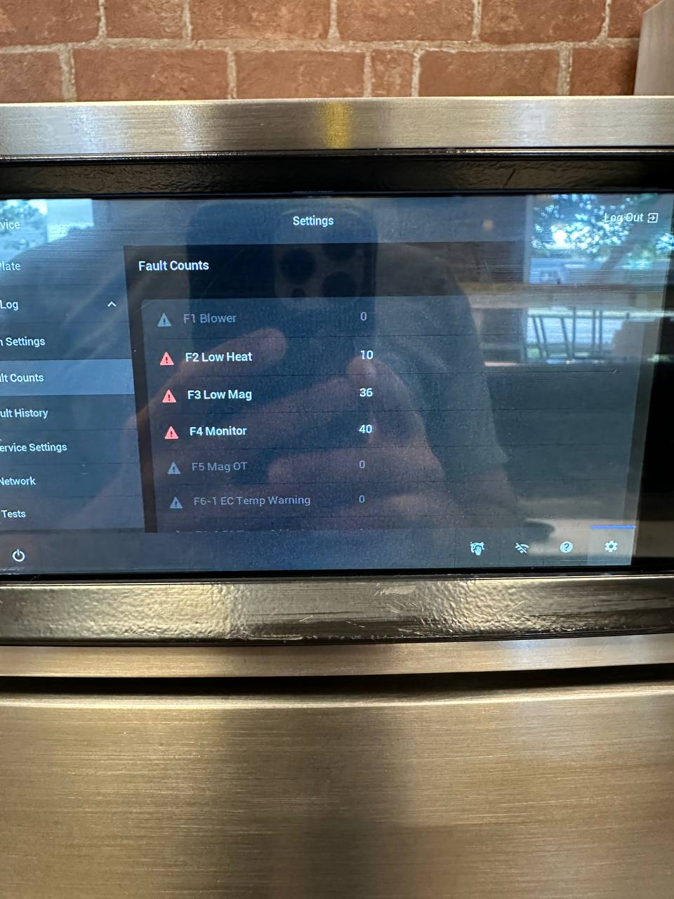

An F4 code means the safety interlock circuit that confirms the door is closed and latched has detected a fault, so the oven refuses to run. It's a safety-first lockout — and it needs professional diagnosis. Authorized TurboChef Service Provider. Factory-trained technicians, OEM parts in stock. Serving Seattle, Bellevue, Tacoma, and the greater Puget Sound.
On a TurboChef speed oven, the error code F4 means Door Monitor Defective. Before the oven will allow any cooking power, a safety interlock circuit must confirm the door is properly closed and latched. That circuit — the door monitor switches and the interlock that reads them — is the last line of defense against operating with a door that could open mid-cycle. When the control board can't get a clean signal from it, the oven locks out with F4.
What that means in practice: the oven won't run a cook cycle — or it errors out when you try to start one. The oven may be otherwise fine, but the door system is in an uncertain state, and the safety logic refuses to take that risk. F4 can be intermittent too: a door monitor that works sometimes and fails other times, or trips depending on how the door is closed.
F4 is a fault that needs professional diagnosis. The door monitor circuit is a safety interlock — a wiring, switch, or alignment fault can all present the same code, and the fix is different in each case. A factory-trained technician verifies the full door circuit and corrects the root cause with genuine OEM parts. Call FixIt Expresso at 425-547-0200.

Need the full code list? See our TurboChef F1–F10 error code guide to identify any fault before you call — we arrive prepared with the right parts.
In our experience across Seattle-area commercial kitchens, an F4 code is a wear-and-tear story more often than a component failure — but not always. That's why we always find the root cause, not just the code.
Door monitor switches take thousands of open-and-close cycles. On high-use units they wear out and read intermittently or not at all. Replacement requires OEM switches matched to your model.
If the door doesn't seat consistently, the monitor switches don't get a clean signal even when they're healthy. Realignment or hinge work fixes what a new switch alone wouldn't.
A worn door seal doesn't just waste energy — it's frequently the root cause behind F4-type door-monitor faults, because the door sits differently as the seal degrades.
Chafed or loose wiring between the door monitors and the control board can produce the same F4 code as a failed switch. We test the full circuit before quoting a replacement.
Related codes worth knowing: where F4 is a door-safety fault, F7 (RTD failure) and F8 (High Limit Tripped) are heating-system faults, and F3 (Magnetron Current Low) often shows up alongside them on compact-cavity models run hard. All shut the oven down until a factory-trained technician diagnoses them properly. Call 425-547-0200 for any F3, F4, F7, or F8 fault.
The same process every time — whether it's a routine F4 during off-hours or an emergency call in the middle of a Friday dinner rush.
Note the F4 (or Door Monitor) code on the display and your model — Sota, Bullet, Encore, i3, i5, NGC, or another — when you call. That's usually enough for us to arrive with the right parts already on the truck instead of diagnosing cold.
Emergency same-day service is available for a down oven during service hours. Non-urgent F4 repairs can be scheduled, or handled via drop-off for models like Sota and NGO.
Our factory-trained technicians confirm the F4 fault, verify the full door monitor circuit — switches, alignment, seal, and wiring — and quote the repair before starting work.
We fix what actually caused the fault — replacing any failed component with genuine OEM parts, and correcting alignment or seal issues so the code doesn't return.
We run a full cook cycle and cycle the door repeatedly to confirm the monitor circuit reads cleanly before we consider the job done.
F4 can appear across the TurboChef lineup. Here's how it plays out on the platforms we service most:
These models most often fail on magnetron current faults (F3), airflow restrictions (F5, F6), and door monitor issues (F4) — especially in high-volume kitchens where the door gets opened constantly.
Door interlock wear (F4) is common on high-use units, alongside magnetron failures (F3) and high-limit trips (F8). Heat builds fast in the small cavity — keep vents clear.
Blower motor issues (F1), RTD probe faults (F7), and control-board communication errors (F10) are most common on the Sota, with F4 less frequent. Drop-off service is available.
The i3 and i5 more often show F2 (cook temp low), F6 (EC temp high), and F9 (belt wear). Door-related faults can still appear on older units as seals and hinges age.
Legacy and specialty platforms we continue to support with OEM parts and factory-trained diagnosis, including double-batch (HhD) and conveyor (HhC) configurations.
Every F4 fault is diagnosed on-site before any work is quoted — you'll know exactly what's needed before we start. Call 425-547-0200.
Most F4 emergency calls trace back to something a maintenance visit would have caught. Three things worth staying ahead of:
A worn door seal doesn't just waste energy — it's frequently the root cause behind F4-type door-monitor faults. Checking seal condition, hinge tightness, and door alignment on a schedule is faster and cheaper than an emergency call.
Restricted airflow is behind more faults than any single component failure — it's what drives over-temperature conditions and accelerates wear on door and cavity components alike. Clean filters and clear vents are the cheapest insurance against a mid-shift breakdown.
Temperature probes drift before they fail outright. A scheduled inspection catches a probe reading out of spec — the creeping inaccuracy before an F7 lockout — so it can be replaced on your timeline, not the oven's.
F4 means Door Monitor Defective. The safety interlock circuit that confirms the door is closed and latched before cooking is allowed has detected a fault, so the oven refuses to run. It requires professional diagnosis. Call FixIt Expresso at 425-547-0200.
Most often wear — the door monitor switches and interlock take thousands of open-and-close cycles, so F4 shows up on high-use units. Door misalignment, worn hinges, a worn door seal, or wiring to the monitor circuit can also produce F4. The oven must be professionally diagnosed so the root cause, not just the code, is addressed.
No — F4 is a safety interlock lockout. The oven will not run until the door monitor circuit is professionally diagnosed and repaired. Bypassing or ignoring a safety code is never safe. Call FixIt Expresso at 425-547-0200.
Most F4 repairs are completed same-day or within 24-72 hours. We offer emergency same-day service for a down oven. Call 425-547-0200.
F4 is most common on high-use models — NGC units in high-volume kitchens and compact-cavity models like the Bullet and Encore where door interlock wear shows up sooner. We repair F4 on all current and legacy TurboChef models: Sota (NGO), Bullet, Encore, HhD Double Batch, i3, i5, NGC, ECO, Fire, and more.
Call now or request service online. We respond fast — same-day emergency service available for a down oven.
📞 Call 425-547-0200 Request ServiceTurboChef F4 door-monitor repair across the Puget Sound: Seattle • Bellevue • Redmond • Kirkland • Renton • Kent • Tacoma • Everett • Auburn • Federal Way. We're a mobile service based in Renton — our technicians come to your kitchen within roughly 80 miles of Seattle. See TurboChef repair across the Puget Sound for the full picture.